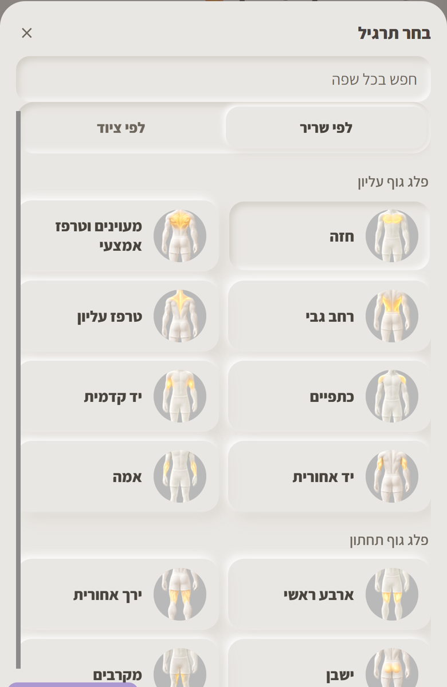
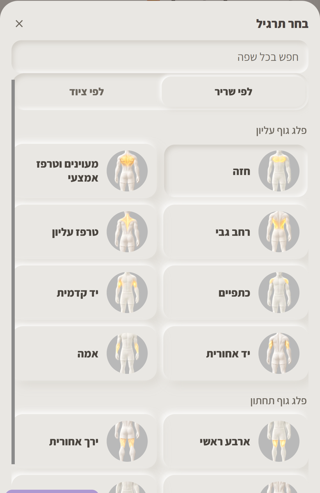
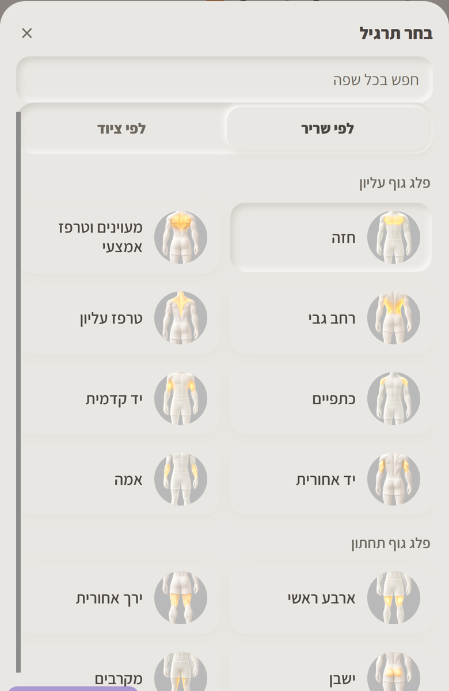

עכשיו הכפתורים שטוחים ונבלעים ברקע. בעיצוב שלנו כפתור שלא נבחר בולט מהמשטח, כמו הלשונית "לפי שריר", וכפתור שנבחר לחוץ פנימה. בכל צילום "חזה" נבחר, כדי שיראו את שני המצבים. השם מודגש כמו בלשוניות. אלה צילומים של המסך האמיתי, ו-dev לא השתנה.
הכפתור בולט מהמשטח; העיגול כמו היום.

כמו א, והעיגול יושב בגומה לחוצה - "אור בתוך ערוץ לחוץ".

להשוואה.
